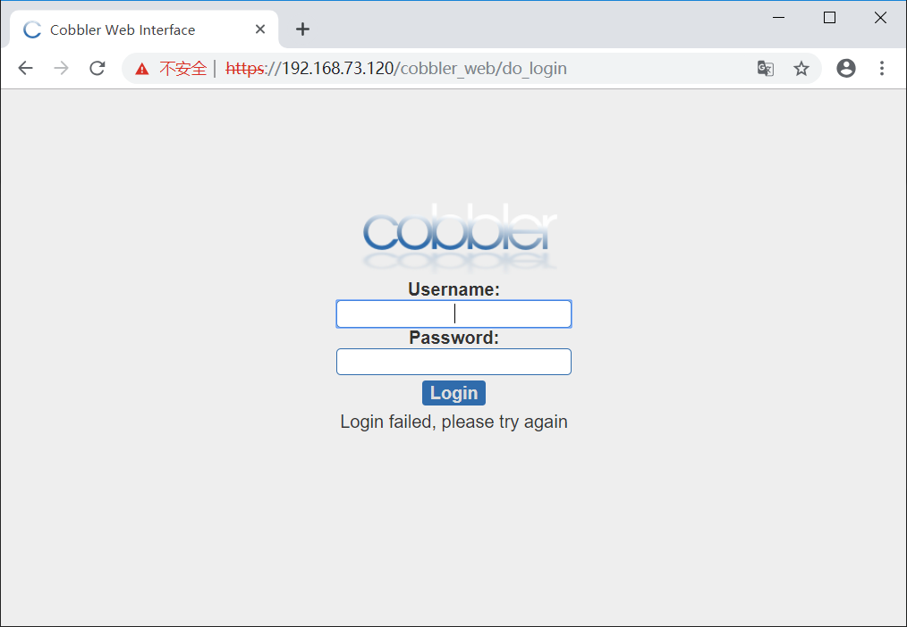

cobbler自动化安装操作系统
cobbler自动安装操作系统
cobbler是快速网络安装linux操作系统的服务，支持众多的Linux发行版：Red Hat、Fedora、CentOS、Debian、Ubuntu和SuSE，也可以支持网络安装windows
一、配置yum源
cobbler所在的源是epel源所以先配置yum源
1 | [root@centos7 ~]# vim /etc/yum.repos.d/base.repo |
二、安装cobbler和dhcp服务
1 | [root@centos7 ~]# yum install cobbler dhcp -y |
三、启动相关服务并设置为开机启动
1 | [root@centos7 ~]# systemctl enable rsyncd httpd tftp cobblerd dhcpd |
四、配置cobbler
1.使用cobbler check查看所需配置的内容
1 | root@centos7 ~]# cobbler check |
2.在/etc/cobbler/setting文件中查找到以下几项并进行修改
1 | server: 192.168.73.120 #cobbler的服务器地址 |
4.修改cobbler的dhcp模板文件
1 | [root@centos7 ~]# vim /etc/cobbler/dhcp.template |
5.将cobbler的DHCP文件进行同步
1 | [root@centos7 ~]# cobbler sync |
6.重启cobbler服务以及DHCP服务
1 | [root@centos7 ~]# systemctl restart cobblerd |
五、为cobbler配置系统镜像文件
1.将光盘挂载至一个空目录
1 | [root@centos7 ~]# mount /dev/sr0 /mnt |
2.将光盘内文件复制入cobbler，此步骤是将光盘的的文件复制至/var/www/cobbler/ks_mirror/目录下
1 | [root@centos7 ~]# cobbler import --path=/mnt --name=Centos-6.10 --arch=x86_64 |
由于cobbler自带了KS文件，所以现在已经能够实现自动化安装系统了，若要实现使用自己定制的KS文件，来实现自动化安装看下面的补充。
补充
在实际生产环境中可能需要安装各种不同的定制化的系统，此时就需要准备各种不同的ks文件，并将文件与相对应的系统关联起来。
一、准备ks文件
1.ks文件可以在图形化界面通过system-config-kickstart进行生成，也手写(不建议)或使用已经装好的系统中，/root/anaconda-ks.cfg进行修改。此处以最小化安装ks文件为例。
此处需要注意的是在ks文件中使用network安装，要将url的路径设置为cobbler的内置变量$tree
1 | # Use network installation |
2.ks6mini.cfg文件内容
1 | [root@centos7 ~]# vim ks6.cfg |
二、将ks文件复制到cobbler的ks的仓库中
cobbler有自带的ks仓库，其目录在/var/lib/cobbler/kickstarts/，将所准备好的ks文件复制到此目录下
1 | [root@centos7 ~]# cp ks6mini.cfg /var/lib/cobbler/kickstarts/ |
三、将ks文件与cobbler中的系统镜像相关联
1.首先查看下cobbler仓库中的ks文件关联列表以及cobbler中所存在的系统镜像
1 | [root@centos7 ~]# cobbler profile list #此命令可以查看ks关联安装列表 |
2.将ks6mini.cfg文件进行关联
1 | [root@centos7 ~]# cobbler profile add --name=Centos-6.10-mini-x86_64 --distro=Centos-6.10-x86_64 --ks=/var/lib/cobbler/kickstarts/ks6mini.cfg |
3.删除ks关联
由于cobbler所自带的关联安装方法，并不是我们想要的，所以我们需要将其从列表中删除，删除方法
1 | [root@centos7 ~]# cobbler profile remove --name=Centos-6.10-x86_64 #删除列表 |
基于web的cobbler管理
由于文本形式的cobbler的管理不太友好，我们也可以使用基于web的管理方法
一、安装cobbler-web
1 | [root@centos7 mnt]# yum install cobbler-web -y |
二、重启httpd服务
1 | [root@centos7 mnt]# systemctl restart httpd |
三、此时已经能访问cobbler的web界面
cobbler_web是基于ssl的，所以需要使用https协议，访问地址为：https://XXX.XXX.XXX.XXX/cobbler_web

cobbler_web的账户和密码
cobbler默认账户和密码都为cobbler，此密码不够安全，我们需要对其加以修改。
一、authn_configfile验证方法
cobbler的验证文件存放在/etc/cobbler/modules.conf内部详细的说明了各种验证方法，默认的验证方法为configfile。
1 | [root@centos7 mnt]# cat /etc/cobbler/modules.conf |
添加用户和删除用户
auth_confile的用户名和密码存放在/etc/cobbler/users.digest中使用一下命令可以创建Cobbler的用户和密码
1 | [root@centos7 mnt]# htdigest /etc/cobbler/users.digest Cobbler admin #注意此处Cobbler的C必须为大写 |
Cobbler删除用户只需要在/etc/cobbler/users.digest中找到用户相对应的行将其删除。
二、authn_pam的验证方法
1.修改验证文件/etc/cobbler/modules.conf中的authentication项，pam验证方法的用户名和密码存放在/etc/cobbler/users.conf文件中
1 | [authentication] |
2.基于pam验证的用户名和密码的创建
创建一个Linux用户
1 | [root@centos7 mnt]# useradd -s /sbin/nologin cobbleradmin |
此时可以使用Linxu账户进行登陆cobbler_web